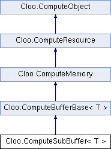

Represents an OpenCL sub-buffer. More...
Inheritance diagram for Cloo.ComputeSubBuffer< T >:

Public Member Functions | |
| ComputeSubBuffer (ComputeBuffer< T > buffer, ComputeMemoryFlags flags, long offset, long count) | |
Creates a new ComputeSubBuffer from a specified ComputeBuffer. | |
| override string | ToString () |
Gets the string representation of the ComputeSubBuffer. | |
Detailed Description
template<T>
class Cloo::ComputeSubBuffer-g< T >
Represents an OpenCL sub-buffer.
- Template Parameters:
-
T The type of the elements of the ComputeSubBuffer. T is restricted to value types andstructs containing such types.
A sub-buffer is created from a standard buffer and represents all or part of its data content.
Requires OpenCL 1.1.
- Type Constraints
-
T : struct
Member Function Documentation
template<T >
| Cloo.ComputeSubBuffer< T >.ComputeSubBuffer | ( | ComputeBuffer< T > | buffer, | |
| ComputeMemoryFlags | flags, | |||
| long | offset, | |||
| long | count | |||
| ) |
Creates a new ComputeSubBuffer from a specified ComputeBuffer.
- Parameters:
-
buffer The buffer to create the ComputeSubBufferfrom.flags A bit-field that is used to specify allocation and usage information about the ComputeBuffer.offset The index of the element of buffer , where the ComputeSubBufferstarts.count The number of elements of buffer to include in the ComputeSubBuffer.
template<T >
| override string Cloo.ComputeSubBuffer< T >.ToString | ( | ) |
Gets the string representation of the ComputeSubBuffer.
- Returns:
- The string representation of the
ComputeSubBuffer.
Reimplemented from Cloo.ComputeObject.
The documentation for this class was generated from the following file:
- Cloo/Source/ComputeSubBuffer.cs
Generated on Mon Aug 30 2010 20:21:29 for Cloo by
 1.7.1
1.7.1